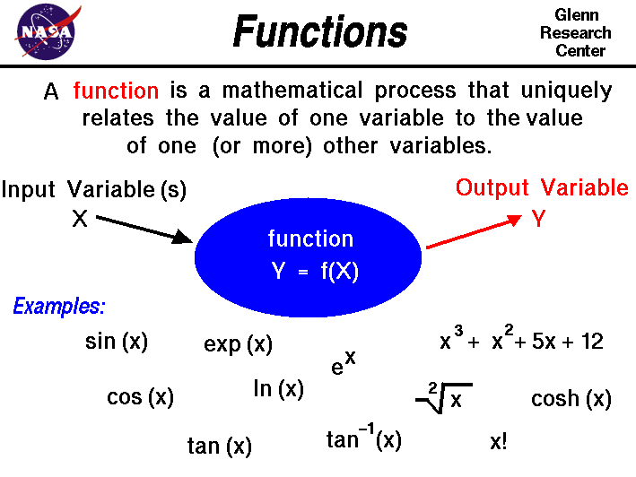

|

An important mathematical concept is the idea of
function. A function is a mathematical process that
uniquely relates the value of one variable
to the value of another variable in the problem.
Schematically, we can think of a function as a "processor" that
takes in one (or more) input variables and produces an output
variable. We call the output variable the dependent variable
and the input variable is called the independent variable.
Changing the value of an independent variable produces a change in the
value of the dependent variable that is always the same.
On this slide we will denote an independent variable as X
and the dependent variable as Y. We denote that Y is
a function of X by the symbol:
Y = f (X)
Some functions occur so often in math and science that
we assign special names and symbols to them.
At the bottom of the slide we have listed some examples of
functions that occur in aerospace engineering.
The trigonometric functions
sine, cosine, and tangent
relate the various sides and angles of a triangle.
The value of the function depends only on the
angle
between two sides of a right triangle. So we can write the functions
as:
Y = sin(X)
W = cos(X)
Z = tan(X)
where the value of X is an angle and the value of Y,
W, and Z are numbers.
Since the value of the function is always the same, the value can be
tabulated
and used to solve problems.
Some examples of problems involving triangles and angles include the
forces on a model rocket during
powered flight,
the application of
torques,
and the resolution of the
components
of a vector.
Another function which you may have seen is the factorial function
with the symbol X!. The value of this function is formed by
multiplying X times X-1 times X-2, etc. until
you get to 1:
Y = X!
Y = 4! = 4 * 3 * 2 * 1 = 24
This function occurs in many probability and statistics problems.
There are some interesting properties of functions.
Functions can be grouped together to form other functions.
On the slide the polynomial:
Y = X^3 + X^2 + 5*X + 12
is made by adding powers of X. The function here is:
Y = X^n
where n is any number. Y is generated by multiplying
X times itself n times.
There are some special functions, called inverse functions,
which "un-do" the operation of some other function. The square root
function is the inverse of the square function. So if
Y = X^2
16 = 4^2
Then:
Y = sqrt(X)
4 = sqrt(16)
Since
lift and
drag
depend on the square of the
velocity, we often use square roots to solve
velocity problems. This function is used in the determination of the
terminal velocity of a falling object.
The function tan^-1(X) on the figure is called the arc-tangent
of X.
This function
is the inverse of the trigonometric tangent function.
It returns the angle Y whose tangent is X.
There are inverses for the sine and cosine as well.
The exponential function, exp(X) or
e^X, is a special function that comes from calculus. In
calculus, we are often trying to determine the rate at which some
function changes. The rate is expressed as another function called
a differential and the rate is the slope of the graph of
the function. If we have a function Y = f(X), then the
slope of the function is called Z and;
Z = dY/dX
The exp function is the special function
whose slope (rate of change) is equal to the value of the function.
Y = exp(X) = d[exp(X)]/dX = dY/dX
This function often occurs in nature when the rate of change of
a variable equals the amount of the variable.
The change in
atmospheric pressure
with altitude is an exponential.
The inverse of the exponential function is the logarithmic
function with the symbol ln(X). The ln function
appears in many
thermodynamics problems, such as
calculating the change in the
entropy
of a gas during a thermodynamic process.
The cosh (X) function on the slide is the hyperbolic cosine
function. It is a special, tabulated function that results from
solving a certain form of differential equation and is similar to
the trigonometric cos function. This function appears in the
solution to the problem of a line that sags
under its own weight like the support cables of
a bridge.
Activities:
Guided Tours
Navigation ..


- Beginner's Guide Home Page
|